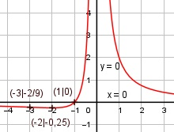

Aufgabe 111 x + 1 f(x) = ------- x2 Quotientenregel erste Ableitung: u = x + 1, u' = 1 v = x2, v' = 2x 1 * x2 - 2x * (x + 1) x2 - 2x2 - 2x f'(x) = ----------------------- = --------------- x4 x4 x2 + 2x x*(x + 2) x + 2 f'(x) = - ---------- = - ----------- = - ------- x4 x4 x3 Quotientenregel zweite Ableitung: u = -(x + 2), u' = -1 v = x3, v' = 3x2 -1 * x3 - 3x2 * -(x + 2) f''(x) = --------------------------- x6 -x3 + 3x3 + 6x2 2x3 + 6x2 f''(x)= ----------------- = ----------- x6 x6 x2 * (2x + 6) 2x + 6 f''(x) = --------------- = --------- x6 x4 Zur Beurteilung, ob f'''(x) ≠ 0 : (Begründung siehe Aufgabe 105) u = 2x + 6, u' = 2 u' 2 f'''(x) = --- = ---- ≠ 0 für alle x ≠ 0 v x4 Polstellen, Nenner = 0: x2 = 0 |ⱱ x1,2 = 0 Nenner = 0 und Zähler = 0 + 1 = 1 ≠ 0 --> senkrechte Asymptote Definitionsbereich: -∞ < x < ∞, x ≠ 0 Waagerechte Asymptote: x + 1 f(x) = ------- geht gegen 0 für x --> ± ∞ x2 Wertebereich: -0,25 < f(x) < ∞ Symmetrie zur y-Achse bzw. zum Punkt (0|0): -x + 1 -x + 1 f(-x) = -------- = -------- = ≠ f(x) (-x)2 x2 --> keine Achsensymmetrie -(-x + 1) x - 1 -f(-x) = ---------- = -------- ≠ f(x) x2 x2 --> keine Punktsymmetrie Nullstellen: f(x) = 0 x + 1 ------- = 0 |*x2 x2 x + 1 = 0 |-1 x = -1 Schnittpunkt mit der y-Achse: x = 0 Polstelle --> kein Schnittpunkt Extrempunkte: f'(x) = 0 x + 2 - ------- = 0 |*x3 x3 -(x + 2) = 0 |*(-1) x + 2 = 0 |-2 x = -2 -2 + 1 -1 f(-2) = -------- = ----- = -0,25 (-2)2 4 2 * ((-2) + 3) f''(-2) = ----------------- > 0 --> (-2)4 Tiefpunkt (-2|-0,25) Wendepunkte: f''(x) = 0 2x + 6 ------- = 0 |*x4 x4 2x + 6 = 0 |:2 x + 3 = 0 |-3 x = -3 -3 + 1 2 f(-3) = --------- = - --- ; f'''(-3) ≠ 0 (-3)2 9 Wendepunkt (-3|-2/9) Graph:
